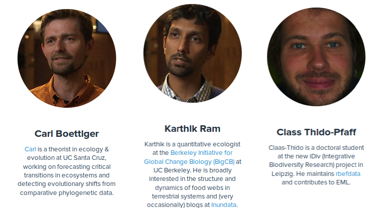
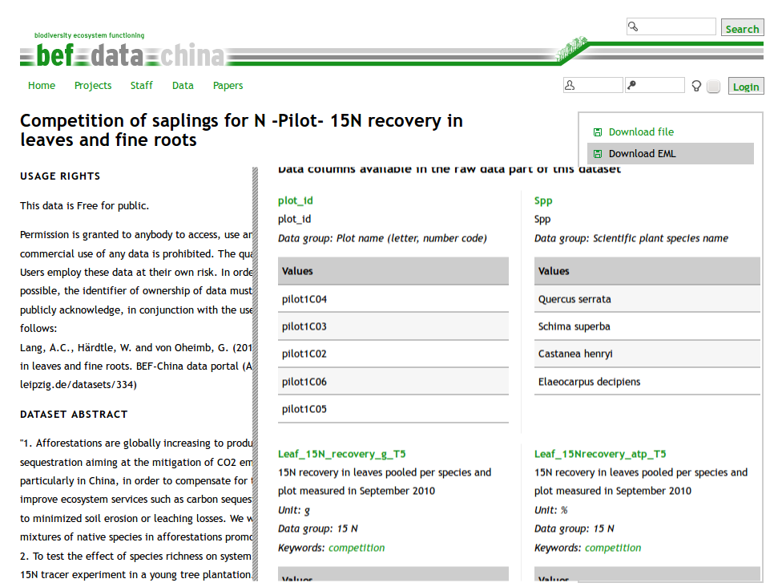

EML for R allows
- reading
- describe
- publishing
data using the Ecological Metadata Language (EML) format.
Claas-Thido Pfaff
EML for R allows
data using the Ecological Metadata Language (EML) format.

Motivation:
Many ecol. data lacks description
Good metadata:
Source code:
From Github with (as in development):
library("devtools")
install_github("EML", "ropensci")
library("EML")
install_github("EML", "ropensci", build_vignettes=FALSE)

metadata <- eml_read("http://china.befdata.biow.uni-leipzig.de/datasets/334.eml")
eml_get(metadata, "xy")
eml_get(metadata, "col.defs")[1]
## attribute
## "Plot number according to design spreadsheet. Plots are named according to their location on the original spreadsheet used for treatment design. This has letters from West to East and numbers from North to south. Some plots were moved half a gridcell (1 mu) so be suitable for planting (grid cell loctype). (plot_id: plot_id)"
eml_get(metadata, "creator")
## [1] "Anne Lang <anne_christina.lang@uni-leipzig.de> [cre]"
## [2] "Werner Härdtle <haerdtle@uni-lueneburg.de> [cre]"
## [3] "Goddert von Oheimb <vonoheimb@uni.leuphana.de> [cre]"
eml_get(metadata, "coverage")
## geographicCoverage:
## geographicDescription: "The experiment was set up in the northeast part of Jiangxi
## Province, P.R. China (N 29° 06.29 E 117° 55.28). \n"
## boundingCoordinates:
## westBoundingCoordinate: '117.89978'
## eastBoundingCoordinate: '118.148346'
## northBoundingCoordinate: '29.285201'
## southBoundingCoordinate: '29.101777'
## temporalCoverage:
## rangeOfDates:
## beginDate:
## calendarDate: |2
##
## 2009-08-26
## endDate:
## calendarDate: |2
##
## 2010-09-26
## taxonomicCoverage:
## taxonomicClassification:
## commonName: |2+
##
## tree species (Schima superba, Elaeoarpus decipiens, Castanea henryi, Quercus serrata)
example_dataset = eml_get(metadata, "data.set")
example_dataset[1:4, 1:3]
## plot_id Spp Leaf_15N_recovery_g_T5
## 1 pilot1C09 Castanea henryi 1.504e-05
## 2 pilot1D10 Castanea henryi 8.604e-05
## 3 pilot2C11 Castanea henryi 2.905e-05
## 4 pilot2D01 Castanea henryi 8.923e-06
river = c("SAC", "SAC", "AM")
spp = c("king", "king", "ccho")
stg = c("smolt", "parr", "smolt")
ct = c(293, 410, 210)
undescribed_dataframe = data.frame(river, spp, stg, ct)
undescribed_dataframe
## river spp stg ct
## 1 SAC king smolt 293
## 2 SAC king parr 410
## 3 AM ccho smolt 210
data.frame with data.set class (additional params)col.defs (plain text definition)col_defs = c("River site used for collection",
"Species common name",
"Life Stage",
"count of live fish in traps")
unit.defs (factor => levels, dates => YYYY or MM-DD-YY, numeric => unit list KNB)unit_defs = list(c(SAC = "The Sacramento River", AM = "The American River"),
c(king = "King Salmon", ccho = "Coho Salmon"),
c(parr = "third life stage", smolt = "fourth life stage"),
"number")
described_dataset = data.set(river = c("SAC", "SAC", "AM"),
spp = c("king", "king", "ccho"),
stg = c("smolt", "parr", "smolt"),
ct = c(293, 410, 210),
col.defs = col_defs,
unit.defs = unit_defs)
data.set(undescribed_dataframe, col.def = col_defs, uni.defs = unit_defs)
- eml
- dataset
- creator (add)
- contact (add)
- publisher
- title (add)
- pubDate
- keywords
- abstract
- intellectualRights (resuse)
- methods
- coverage
- dataTable
- physical
- attributeList
- additionalMetadata
claas = eml_person("Claas-Thido Pfaff <fake@test.com>")
creator_claas = as(claas, "creator")
contact_claas = as(claas, "contact")
creator_claas@individualName
## An object of class "individualName"
## Slot "salutation":
## character(0)
##
## Slot "givenName":
## [1] "Claas-Thido"
##
## Slot "surName":
## [1] "Pfaff"
address <- new("address",
deliveryPoint = "Universität Leipzig, Johannisallee 21",
city = "Leipzig",
postalCode = "04103",
country = "GER")
creator_claas@address = address
contact_claas@address = address
creator_claas@address@city
## [1] "Leipzig"
string also e.g intellectual rights,abstract ... )title <- "This is my first dataset title with EML from R"
metadata <- eml_read("http://china.befdata.biow.uni-leipzig.de/datasets/334.eml")
license = metadata@dataset@intellectualRights
unlist(strsplit(metadata@dataset@intellectualRights, split="\\."))[1]
## [1] "Permission is granted to anybody to access, use and publish all open for public data freely"
dataset_describedtitlecreator_claascontact_claaslicensedata <- eml(dat = described_dataset,
title = title,
creator = creator_claas,
contact = contact_claas,
intellectualRights = license,
)
slotNames(new("dataset"))[1:10]
## [1] "alternateIdentifier" "shortName" "title"
## [4] "creator" "metadataProvider" "associatedParty"
## [7] "pubDate" "language" "series"
## [10] "abstract"
eml_write(data, file="mymetadata.xml")
## [1] "mymetadata.xml"
eml_validate("mymetadata.xml")
## EML specific tests XML specific tests
## TRUE TRUE
eml_publish("mymetadata.xml",
description="My example EML file",
categories = "Ecology",
tags = "EML",
destination="figshare")
rfigshare package + account
The EML package: